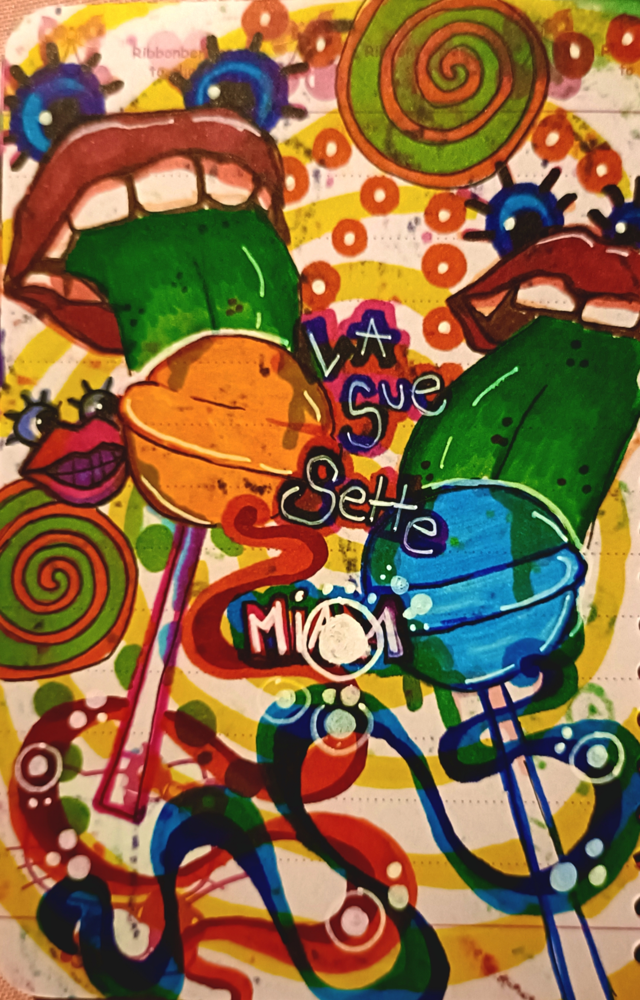

Mes oeuvres n'auront pas de nom, elles sont juste telles qu'elles sont.
Alors que je partageais une sucette avec une bonne amie, cette idée de dessin m'est venue comme une évidence.je me souviens encore de leurs goûts...Les sue sette goût Coca et Orange chimique. Que de bon souvenirs!
J'ai utilisé des feutres à alcool pour faire ce dessin.J'ai retoucher mon dessin en améliorant les couleurs afin de les rendre plus saturées.